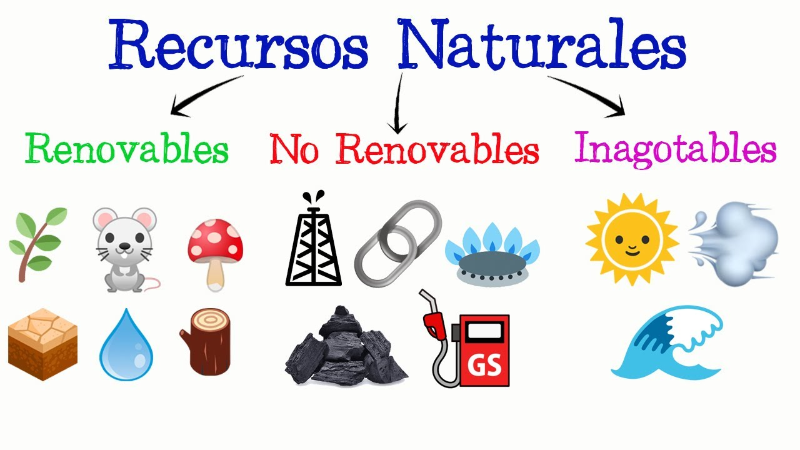
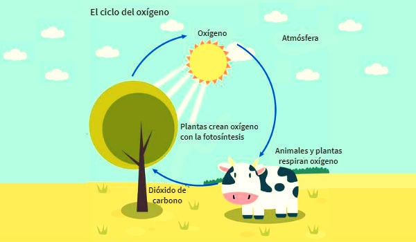
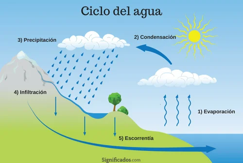

Capítulo 1. El planeta tierra como ecosistema
1.1 ¿Qué es el planeta tierra?
Capítulo 1. El planeta tierra como ecosistema
¿Qué es el planeta tierra?
La Tierra se formó aproximadamente hace 4500 50000000 de años a partir de la
nebulosa protosolar junto con el Sol y los demás planetas del Sistema Solar. Hoy
la Tierra ocupa el cuarto lugar en tamaño de los planetas del Sistema Solar y es el
tercero en orden de distancia con respecto al sol

-
Características de Gaia (el planeta tierra):
- Es el único lugar del universo donde se ha confirmado hasta ahora que existe la vida.
- Hoy evolucionado mediante procesos geológicos y biológicos.
- Su superficie externa se divide en litosfera hidrosfera donde la litosfera está fragmentada en una serie de placas que se desplazan sobre el manto terrestre y se sitúan principalmente en el hemisferio norte la red está constituido principalmente por los océanos.
- Su interior permanece activo con una gruesa capa de materiales fundidos y un núcleo rico en hierro que genera un campo magnético.
El primer principio básico de la naturaleza establece que la Tierra es un ecosistema o sistema viviente caracterizado por ser finito, en homeostasis y sustentable
La Tierra es un sistema viviente o ecosistema por sí misma, y esta característica
está definida por la interacción de los diversos ecosistemas acuáticos y terrestres
que la integran y que al evolucionar mediante procesos geoquímicos (abióticos) y
biológicos (bióticos) determinan las condiciones iniciales apropiadas para el inicio
de la vida y la posterior consolidación de la biosfera
Así mismo la Tierra a pesar de su inmensidad y riqueza de recursos se caracteriza
por ser finita No sólo en su dimensión o tamaño, sino también en su espacio y
recursos disponibles para el hombre. La Tierra está cubierta por un 70% por la
hidrosfera:
- 97% son océanos.
- 2% hielo glaciar de las zonas polares y partes altas de las montañas.
- El restante 1% a pesar de ser agua dulce no está disponible ni accesible al ser humano en su totalidad. (Actualmente la población mundial consume el 54% del agua dulce disponible)
- El 30% corresponde a las áreas polares de ciertos y montañas, que no son aprovechables por el ser humano.
- 32% Es área de bosque.
- 25% pastizales.
- 11% de la superficie continental.
- El resto es el área modificada por el ser humano para su uso de áreas naturales o áreas agropecuarias y solamente 2% es ocupada por asentamientos humanos.
-
Recursos permanentes o inagotables
Son inagotables en la escala de tiempo humano, aunque puede haber variación en la distribución espacial y temporal del recurso; Pueden ser la energía solar, el viento, las mareas o el suelo.
-
Recursos agotables o no renovables

Existen en la Tierra en una cantidad finita o determinada si no se usan estos recursos de una manera racional y eficiente se agotarán ya que no se forman más. Pueden ser los recursos fósiles como el carbono o el petróleo.
-
Recursos renovables
Aquellos que se generan y conservan por medio de procesos bioquímicos, que se producen en los diferentes ciclos de la vida; como el caso del oxígeno, agua, carbono, nitrógeno o seres vivos.

El 30% restante es la litosfera o corteza terrestre donde:
Los recursos de la Tierra son finitos, con base en su disponibilidad y accesibilidad, y de acuerdo con esta particularidad podemos clasificar los recursos presentes en la Tierra en:
Estructura y funcionamiento de la tierra
El segundo principio básico de la naturaleza establece que la Tierra es un sistema viviente constituido por 2 subsistemas subsistema físico o ecosfera y subsistema biológico
Subsistema físico:
El subsistema físico está integrado por la atmósfera la hidrosfera y la litosfera:
-
Atmosfera

Es la capa de gases que envuelve la Tierra y se compone principalmente de nitrógeno, oxígeno y dióxido de carbono, así como vapor de agua y otros gases en menor concentración. Esta es una cubierta protectora de la Tierra, sin ella las temperaturas terrestres alcanzarían más de 75 °C durante el día y menos de hoy 130 °C bajo cero durante la noche. Hoy protege la superficie de la Tierra de la radiación solar de la energía que es dañina para los seres vivos, mientras que deja pasar la radiación menos energética esencial en diversos procesos para los seres vivos como el efecto invernadero y la fotosíntesis.
-
Hidrosfera:

Es el agua en estado líquido que cubre la Tierra está integrado por los mares océanos lagos ríos y otros cuerpos de agua superficiales y subterráneos además del agua en estado sólido o congelada en los casquetes polares, los glaciares y el agua en estado gaseoso o vapor, gotas de lluvia y cristales de hielo presentes en la atmósfera.
-
Litosfera:

Es la porción sólida de la corteza terrestre está formado por una compleja muestra de materiales inorgánicos y materia orgánica. El suelo es el sustrato sobre el que se desarrollan la mayoría de los organismos que viven sobre o dentro de la litosfera, hoy ese lugar de billones de microorganismos al igual que de macroorganismos. Es uno de los cuatro recursos naturales más preciados ya que integra todas las otras partes del ecosistema, probé un medio para las plantas para que así el ser humano pueda disponer de alimentos ropa y otros materiales
Subsistema biológico:

Esto está integrado por los organismos productores consumidores y
desintegradores en este subsistema se encuentra los materiales y sustancias
orgánicas y ocurren las interrelaciones bióticas entre organismos.
Las interacciones y procesos abióticos y bióticos que ocurren entre los 2
subsistemas constituyen un sistema ecológico llamado biosfera. Los seres vivos
autorregulan estas interacciones e intercambios de energía o materia y se
caracterizan por ser complejas de amplia escala temporal y amplia distribución
espacial
Capitulo 2. Flujo de energía y ciclos biogeoquímicos.
2.1 Flujo de energía.
Capitulo 2. Flujo de energía y ciclos biogeoquímicos.
Flujo de energía.
El tercer principio básico de la naturaleza establece que la Tierra es un sistema
abierto con respecto al flujo de energía

Del total de la energía generada por el Sol a nuestro planeta llega a un 10% como
radiación ultravioleta 45% como los visible y 45% de radiación infrarroja.
Hoy a partir del sol se inicia el flujo de energía; la cual viaja a través del espacio y
demora de 7 a 8 minutos en llegar a nuestro planeta, hoy un 34% es
inmediatamente reflejado por las nubes, sustancias químicas y polvo suspendido
en la atmósfera y por la superficie terrestre. Del 66% restante, 42% calienta la
atmósfera y la superficie del planeta, 22% o por el agua y la circula a través de la y
1% genera los vientos. Hoy el 1% restante es capturado por las plantas verdes u
organismos fotosíntesis hoy para producir compuestos orgánicos a través del
proceso de la fotosíntesis.
Ese último 1% de la energía generada por el Sol que entra en la superficie de la
Tierra, hoy entra al subsistema biológico donde es capturada y transformada de
energía solar energía de biomasa por las plantas fotosintéticas u organismos
productores y esta energía química es dispersada a través de la cadena
alimenticia a los consumidores y desintegradores
“No sólo es el inicio del flujo de energía a lo largo de las cadenas tróficas en
la atmósfera sino también en sistemas androgénicos como los campos
agropecuarios y forestales”
Pirámides ecológicas: El balance energético a lo largo de las cadenas tróficas es explicado por la segunda ley de la termodinámica, hoy la cual indica que en cada transformación se pierde disipa la energía en forma de calor o en otras palabras la energía inicial otra forma de energía menos útil o concentrada. El porcentaje de energía transferida de un nivel trófico a otro varía de 2% a 30%, dependiendo del número de niveles de las especies del tipo de ecosistema. Con base en esta ley el flujo de energía a través de los niveles tróficos de las cadenas alimenticias nos permite determinar las pirámides ecológicas en términos de energía, biomasa y número de individuos. El término de pirámide denota la disminución de las variables: energía, biomasa y número de individuos en el nivel inmediato superior, conforme se avanza a lo largo de cadena trófica coma como consecuencia de la energía perdida por costos de mantenimiento metabólico de los individuos del nivel inferior. Por ejemplo, en lo que respecta la biomasa total de la Tierra, 85% corresponde a la vegetación, 10% a la fauna y solamente 5% de la biomasa humana. Hoy en conclusión más la radiación solar es el elemento climático más importante, ya que:
- Es la fuente de energía para los procesos biológicos y físico
- Condiciona los flujos de energía dentro de los ecosistemas
- Condiciona la intensidad y frecuencia de los otros elementos del clima
Ciclos biogeoquímicos.
El cuarto principio establece que la Tierra es un sistema cerrado con respecto al
flujo de materia.
Lo cual denota que las sustancias químicas son cicladas a través
de complejas vías entre los subsistemas físico y biológico y convertidas en formas
útiles por una combinación de procesos biológicos, geológicos y químicos que en
conjunto son llamados ciclos biogeoquímicos.
Flujo de materia.

El cerclaje de sustancias químicas coma que se inicia con la incorporación de los
compuestos químicos inorgánicos de la atmósfera y del suelo a los organismos
productores coma los cuales se elaboran los compuestos orgánicos que necesitan
para su mantenimiento mediante la fotosíntesis Punto a su vez coma estos
compuestos orgánicos de las plantas son consumidos por los organismos
consumidores.
Hoy los intercambios de sustancias químicas en la biosfera ocurren de la fase
ambiental a la fase orgánica y de éste retorna nuevamente a la fase ambiental.
- Fase ambiental: Donde el elemento químico está en forma de inorgánica como en el suelo agua y aire.
- Fase orgánica: Donde el elemento forma parte de los seres vivos como plantas y animales
- Carbono (C)
- Hidrógeno (H)
- Oxígeno (O)
- Nitrógeno (N)
- Fósforo (P)
- Azufre (S)


Ciclos gaseosos:
-
Ciclos del oxígeno.

El oxígeno es el elemento químico más abundante en los seres vivos punto era almacenamiento del carbón orgánico y la liberación de oxígeno por el proceso de la fotosíntesis es esencial para la vida punto este elemento forma parte del agua y de todo tipo de moléculas orgánicas punto como molécula coma el oxígeno, surge en la Tierra inmediatamente después de los organismos autótrofos fotosintéticos. El 20% del oxígeno en la atmósfera es un producto directo de la actividad de los seres vivos. El ciclo de este elemento está estrechamente vinculado al del ciclo del carbono pues el proceso por el que el carbono es asimilado por las plantas implica también la devolución del oxígeno a la atmósfera como se ilustra:
6𝐶𝑂2 + 6𝐻2𝑂 → 𝑒𝑛𝑒𝑟𝑔í𝑎 𝑠𝑜𝑙𝑎𝑟 → 𝐶6𝐻12𝑂6 + 6𝑂2
-
Mientras que el proceso de respiración produce el efecto contrario.
𝐶6𝐻12𝑂6 + 6𝑂2 → 6𝐶𝑂2 + 6𝐻2𝑂 + 𝑒𝑛𝑒𝑟𝑔ía
-
Ciclo del carbono.
Involucran las cuatro esferas de la Tierra la litosfera la hidrosfera la atmósfera y la biosfera, en las cual es el carbono es fundamental para la formación de las moléculas de carbohidratos, lípidos, proteínas y ácidos nucleicos.
-
Ciclo de nitrógeno.
Los organismos emplean el nitrógeno en la síntesis de proteínas, ácidos nucleicos y otras moléculas fundamentales del metabolismo punto su depósito o reservorio es la atmósfera
Ciclos sedimentarios.
En los ciclos sedimentario las sustancias químicas o nutrientes circulan entre la
corteza terrestre, la hidrosfera y los seres vivos. Los nutrientes en estos ciclos
generalmente son reciclados a una velocidad demasiado lenta debido a la
retención de estos nutrientes por miles o millones de años por las rocas
sedentarias y por no presentar una fase gaseos
-
Ciclo del fosforo.
Este elemento es un componente esencial en los organismos parte de los ácidos nucleicos, de la TP y de otras moléculas como las que almacenan energía química. Está en pequeñas cantidades en las plantas coma en proporciones de 0.2%, aproximadamente y en los animales hasta el 1% de su masa puede ser fósforo. Hoy reservorio depósito en la naturaleza es la corteza terrestre, manteniendo un ciclo o flujo poco dinámico.
-
Ciclo del azufre.
Hoy este elemento es imprescindible como micronutriente para los seres vivos coma ya que forma parte de las proteínas. Los océanos constituyen el depósito más significativo de azufre en forma de sulfato inorgánico en la biosfera. Igualmente se encuentra en volúmenes importantes en sedimentos y rocas de la litosfera en forma de minerales de sulfato y minerales de sulfuro.
Ciclo hidrológico

El agua junto con el oxígeno que respiramos coma son los elementos
fundamentales para la vida punto el agua es el disolvente universal coma ya que
todas las sustancias son de alguna manera solubles en agua; hoy me combina
con ciertas sales para formar hidratos reacciona con los óxidos de los metales
formando ácidos y actúa como catalizador en muchas reacciones químicas
importantes. El agua es el componente principal de la materia de viva, constituye
el 50 el 90% de la masa de los organismos vivos coma en el ser humano compone
3/4 partes de nuestros músculos y cerebro y constituye el 83% de la sangre. Es
esencial para todos los tipos de vida coma incluso para aquellos organismos que
la evolución los condujo a Tierra firme coma el agua resulta indispensable coma
de modo que una buena parte de sus estrategias de adaptación tienen al
mantenimiento de un cierto grado de humedad en el interior de su organismo.
El ciclo hidrológico está ligado a los otros ciclos bioquímicos ya que sirve como
medio de transporte para el movimiento de los nutrientes hacia el interior y exterior
de los ecosistemas. El ciclo del agua concentra, purifica y distribuye el abasto
finito de agua en la biosfera. Este elemento por la acción conjunta de la energía
solar y la gravedad cambia continuamente de un estado físico a otro siendo el
único elemento de la Tierra que podemos encontrarlo en los 3 estados físicos de la
materia en la naturaleza.
Dependiendo de su depósito en la eco esfera y su volumen coma la velocidad de
reciclado del agua varía de días a miles de años.
Regla de sustentabilidad
Los ciclos geoquímicos al ciclar las sustancias las renuevan, purifican y
conservan, y a su vez definen la productividad y sustentabilidad de los
ecosistemas punto y los seres vivos desempeñan un papel regulador y de
renovación de los nutrientes.
Hola sustancias químicas o nutrientes no obstante al ser renovables coma son
finitos y podrían agotarse o convertirse en factores limitantes cuando las tasas de
consumo y contaminación antropogénesis basan la tasa de velocidad de ciclado
por el cual se conservan y purifican.
Hoy concluir que con el fin de mantener la sustentabilidad de los recursos y
productividad de los ecosistemas se debe respetar y cumplir la regla de
sustentabilidad.
Regla de sustentabilidad:
“La velocidad de los procesos de reciclado, renovación, purificación,
reemplazo y conservación debe ser siempre mayor que la velocidad de los
procesos naturales y antropológicos de consumo, extracción,
contaminación, destrucción, degradación, fragmentación y abatimiento.
Capítulo 3. Rol de los seres vivos en los ecosistemas.
El quinto principio de la naturaleza define la función de los seres vivos, que al
interactuar con su entorno físico mantienen la estabilidad del planeta y las
condiciones para la vida.
Este principio se fundamenta en la hipótesis de Gaia, que
fue propuesta por los investigadores James E. Lovelock y Lynn Margulis en 1979.
En ella los autores explican que los seres vivos manipulan y regulan el ambiente
para el sostenimiento y mantenimiento de la biosfera.
Evolución del planeta Tierra.

La composición de la corteza terrestre determino el ambiente geoquímico en el cual
la vida se originó La abundancia cósmica de los elementos químicos, su distribución
en la formación de la Tierra y su capacidad de combinarse y formar compuestos
solubles en agua fueron factores determinantes para el surgimiento de la vida.
Ciertamente, los seres vivos y la ecosfera interaccionan dentro de un sistema
(biosfera) retroalimentando y autorregulado para mantener un entorno físico y
químico óptimo para la vida
Evolución de los seres vivos y su impacto en la Tierra
En sus inicios la Tierra se caracterizó por un ambiente con una intensa actividad
volcánica y de intemperismo, así como expuesta frecuentemente al bombardeo de
meteoritos y restos de asteroides lo que generaba en la atmósfera un intenso calor
por las altas temperaturas; las erupciones volcánicas liberaron gases del interior de
la corteza terrestre y se depositaron en la atmósfera primitiva. Cuando la Tierra se
enfrió a temperaturas promedio menores de 100° C propició la condensación del
vapor de agua, que originalmente procedía de su interior y que por acción del
vulcanismo fue expuesta a la atmósfera. De esta forma se dio inicio a la precipitación
del agua en forma líquida desde la atmósfera primitiva a la litosfera.
Los constituyentes simples de los seres vivos se formaron abióticamente y en la
ausencia de oxígeno libre, ya que este elemento al ser muy reactivo hubiera oxidado
las moléculas orgánicas que son fundamentales para la vida.
Bienes y servicios de los ecosistemas
El sexto principio de la naturaleza establece que los ecosistemas, con una
productividad y sustentabilidad finita, brindan bienes y servicios al ser humano.
Indudablemente, los seres vivos al interaccionar con su entorno físico fomentan y
mantienen las condiciones adecuadas para su existencia y bienestar, así como para
el mejoramiento de la biosfera y el sostenimiento de la productividad y
sustentabilidad de la Tierra.
Productos de los ecosistemas.

Los seres humanos obtienen de los ecosistemas bienes o productos que son
esenciales para el mantenimiento de la vida. Algunos de los productos que se
obtienen de los ecosistemas; como, por ejemplo:
- Alimentos, donde se incluye pescado y otros productos del mar, así como animales silvestres.
- Materia prima como: materiales para la construcción, minerales, madera y combustibles.
- Recursos energéticos, como petróleo, carbón y gas natural.
- Medicinas y productos farmacéuticos.
- Materias primas para la elaboración de vestimenta.
- Recursos genéticos para la ganadería y propagación de cultivo.
Servicios fundamentales de los ecosistemas.
Los ecosistemas naturales también le brindan servicios, que son fundamentales
para el sostenimiento de la vida, algunos ejemplos de estos servicios son:
- El mantenimiento de la biodiversidad de la que a su vez se derivan materiales claves para las actividades agrícolas, farmacéuticas e industriales.
- La protección contra la radiación solar de alta energía, como los rayos ultravioleta, que son perjudiciales a todos los seres vivos.
- La limpieza del aire, agua y suelo a través de los ciclos biogeoquímicos.
- La estabilización parcial del clima, por medio de la moderación de los eventos atmosféricos extremos.
Agotamiento de los servicios ambientales.

Los bienes están siendo degradados o agotados y los servicios ecológicos
deteriorados por las actividades humanas al degradar, fragmentar y destruir los
hábitats y al introducir especies exóticas; pero el impacto más significativo e
irreversible sobre los ecosistemas es la pérdida o reducción de la biodiversidad
natural. Dado que la biodiversidad regula y determina los servicios que brindan los
ecosistemas.
Factor limitante y capacidad de carga
El séptimo principio básico de la naturaleza establece que el factor limitante y la
capacidad de carga son determinantes en la dinámica poblacional de las especies.
Factor ecológico y rango de tolerancia.
Un factor ecológico es todo elemento (hábitat o nicho) que actúa directamente y al
menos durante una etapa del ciclo biológico de los seres vivos. Los factores
ecológicos influyen sobre los seres vivos de las siguientes formas:
- Eliminan especies de zonas cuyas características climáticas o fisicoquímicas no son apropiadas.
- Determinan las tasas de natalidad y mortalidad de diversas especies.
- Favorecen la adaptación de las especies, vía modificaciones cuánticas del metabolismo y cualitativas.
Ley del mínimo y ley de tolerancia.

Un principio ecológico relacionado con el rango de tolerancia es la del factor
limitante, expresado originalmente como la ley del mínimo de Leibig.
Leibig en su ley estipulo que una especie estará ausente de un hábitat o ecosistema
cuando cualquier factor indispensable esté por debajo del umbral necesario.
Se establece que:
- Las especies presentan un rango de tolerancia amplio para unos factores y un rango reducido para otros factores.
- Las especies con un rango amplio de tolerancia para la mayoría de los factores ambientales presentan una amplia distribución geográfica.
- Invariablemente las especies no presentes están en la naturaleza con rangos de tolerancia óptimos.
- Las especies en sus diversas etapas de desarrollo varían en sus respuestas de tolerancia a los factores ambientales y donde la etapa de reproducción es la más sensible al ambiente.
- Las interacciones entre los factores físicos, químicos y biológicos generan cambios en las respuestas a los mismos factores.
Factores determinantes de los ecosistemas.
El octavo principio básico de la naturaleza establece que los diferentes ecosistemas del mundo son definidos, determinados y caracterizados por factores bióticos y abióticos.
Factores abióticos.

Clima.
El clima se compone de elementos meteorológicos tales como: la radiación solar, la
temperatura, precipitación, la humedad relativa y los vientos.
Temperatura y precipitación.
A nivel regional la temperatura y precipitación actúan como factores determinantes
donde, de la interacción de estos dos parámetros meteorológicos, la evaporación
excede a la precipitación por ser escasa o baja y esporádica, en estos sitios el clima
es seco y determina un ecosistema semiárido, árido o desértico.
Altitud y Latitud.
Conforme aumenta la altura o elevación sobre el nivel del mar, los climas se vuelven
fríos y húmedos.
Topografía.
La topografía, representa una barrera física natural, influye no solo en la creación
de microclima, sino también influye directamente sobre poblaciones vegetales y
animales al separarlas y aislarlas, reproductiva y geográficamente, surgiendo al
cabo de un tiempo una nueva especie.
Factores bióticos.

Hábitat de las especies.
Coexistencia entre especies en una misma área o lugar se da con base en los
diferentes hábitos de cada una de las especies a repartirse los recursos en tiempo
Tiempo
Otro modo en que pueden coexistir varias especies consiste en repartirse el espacio recursos en tiempos distintos, dicho sistema o comunidad varía o difiere en su fauna ya que durante el día podemos observar una fauna diurna que es totalmente distinta a la fauna nocturna
Especie Humana.
La especie humana en su evolución de primate a homo sapiens se ha convertido en
un factor determinante. El ser humano conforme adquirió conocimientos y generó
tecnologías, fortaleció paulatinamente su capacidad para cambiar la fisionomía de
su entorno, fragmentó y destruyó los ecosistemas, agotando los recursos naturales
y reduciendo la biodiversidad.